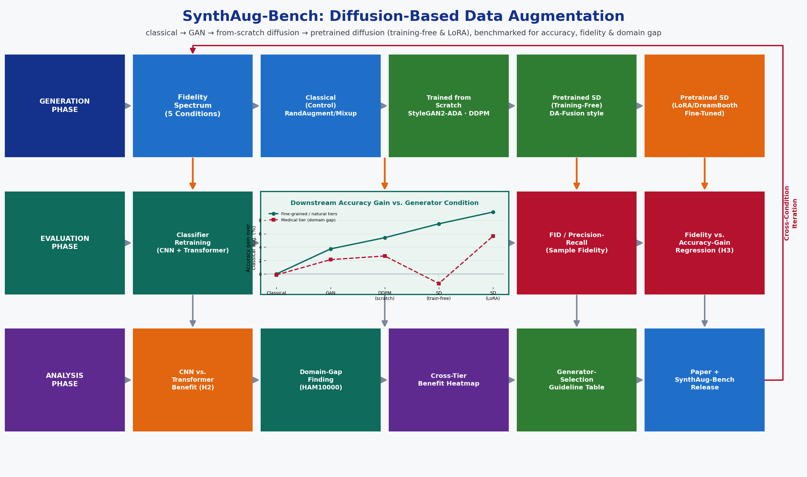

The goal of this project is to build a rigorous, reproducible benchmark that answers a
question the generative-augmentation literature has not yet answered cleanly: as synthetic
image generators grow more sophisticated -- from classical pixel-space augmentation, to
GANs, to diffusion models trained from scratch, to large pretrained foundation diffusion
models adapted with parameter-efficient fine-tuning -- does the resulting boost to downstream
classifier accuracy grow monotonically, plateau, or reverse? And does the answer depend on the
data-scarcity regime (extreme few-shot, natural long-tail, fine-grained, or real-world medical
imbalance) and on the downstream classifier's inductive bias (convolutional vs. attention-based)?
The project is built entirely on pretrained, off-the-shelf, and small from-scratch generative
models that fit comfortably on a single AWS g5.2xlarge instance (1x NVIDIA A10G, 24 GB VRAM,
8 vCPUs, 32 GiB RAM).
Key Objectives:
1. Implement five synthetic-data-generation conditions spanning the full generator-fidelity
spectrum: (a) classical pixel-space augmentation (RandAugment, Mixup, CutMix) as the
no-generative-model control; (b) a class-conditional GAN (StyleGAN2-ADA) trained from
scratch on each low-data split; (c) a small class-conditional DDPM trained from scratch at
reduced resolution; (d) training-free augmentation with a pretrained latent diffusion model
(Stable Diffusion) guided by class-name prompts and per-class textual-inversion tokens,
following the DA-Fusion protocol (Trabucco et al., 2023); (e) the same pretrained Stable
Diffusion adapted per dataset via LoRA/DreamBooth parameter-efficient fine-tuning on the
few available real exemplars per class.
2. Apply all five conditions across four data-scarcity tiers of increasing realism: synthetic
k-shot subsampling of CIFAR-100, the standard CIFAR-100-LT long-tailed benchmark (Cui et
al., 2019), fine-grained low-data classification (Oxford Flowers-102, CUB-200-2011,
Oxford-IIIT Pets), and a real-world imbalanced medical case study (HAM10000 skin-lesion
classification).
3. Retrain four downstream classifiers spanning two architectural families -- CNN (ResNet-50,
ConvNeXt-Tiny) and Transformer (ViT-B/16, Swin-T) -- on real-only vs. real+synthetic data at
multiple synthetic:real ratios, to test whether the value of synthetic augmentation is
architecture-dependent.
4. Quantify every generator's sample fidelity with FID (Heusel et al., 2017) and Improved
Precision & Recall (Kynkaanniemi et al., 2019), and test whether these generative-quality
metrics predict downstream augmentation value -- i.e., whether "better-looking" synthetic
images reliably translate into "more useful" training data.
5. Package the full pipeline -- generators, classifiers, evaluation metrics, and the resulting
benchmarking DataFrame -- as an open-source, config-driven repository (SynthAug-Bench) with
reproducible notebooks, so future students/researchers can add new datasets or generators.

Figure 1: Caption All datasets below are publicly available for research use with no restricted access. The
project organizes them into four tiers of increasing realism, mirroring the data-scarcity
regimes studied in the Approach section.
TIER A -- CONTROLLED FEW-SHOT ABLATION:
1. CIFAR-100 (Krizhevsky, 2009), subsampled to k images/class for k = 5, 10, 20, 50, keeping a
full-size held-out test set. Fully controllable shot-count sweep; low resolution (32x32)
keeps from-scratch GAN/DDPM training tractable on a single GPU.
https://www.cs.toronto.edu/~kriz/cifar.html
TIER B -- NATURAL LONG-TAIL:
2. CIFAR-100-LT, the standard exponential long-tailed split of CIFAR-100 at imbalance ratios
100, 50, and 10 (protocol of Cui et al., 2019, "Class-Balanced Loss," CVPR), used to test
whether synthetic augmentation can rebalance rare classes better than reweighting alone.
TIER C -- FINE-GRAINED LOW-DATA (REAL):
3. Oxford Flowers-102 (Nilsback & Zisserman, 2008) -- 102 classes, as few as ~10 images/class
in the standard split: https://www.robots.ox.ac.uk/~vgg/data/flowers/102/
4. CUB-200-2011 (Wah et al., 2011) -- 200 fine-grained bird species, ~30 images/class:
https://www.vision.caltech.edu/datasets/cub_200_2011/
5. Oxford-IIIT Pets (Parkhi et al., 2012) -- 37 pet breeds, ~100 images/class:
https://www.robots.ox.ac.uk/~vgg/data/pets/
TIER D -- REAL-WORLD IMBALANCED MEDICAL CASE STUDY:
6. HAM10000 (Tschandl et al., 2018) -- 10,015 dermoscopic images across 7 skin-lesion classes,
naturally imbalanced (the majority class is ~67% of the data, the rarest ~1%); public,
de-identified research dataset: https://doi.org/10.7910/DVN/DBW86T
DATASET / GENERATOR PREPARATION:
- Standardize every tier behind a common ImageFolder-style loader with a fixed, documented
train/val/test split and a fixed random seed for k-shot / long-tail subsampling
- For each (tier, generator condition) pair, record: number of real training images, number of
synthetic images generated, synthetic:real ratio used, generator training/fine-tuning wall
clock time, and FID / Precision / Recall of the synthetic sample vs. the real held-out set
- Document all preprocessing (resize, normalization, class-name prompt templates for the
diffusion conditions) in a reproducible notebook per tier
- No personally identifiable information is introduced: HAM10014 is a de-identified public
research release; Stable Diffusion is used only in its pretrained/LoRA-adapted form, not
fine-tuned on any patient data beyond the public HAM10000 training images
Training data scarcity is one of the most common real-world obstacles to deploying computer
vision models: fine-grained categories have few labeled examples per class, real-world classes
are long-tailed, and medical imaging datasets are both small and severely imbalanced. Diffusion
models have recently been proposed as a fix -- generate more training images and add them to
the training set -- but the literature reports inconsistent results:
- Azizi et al. (2023) show large-scale fine-tuned diffusion models (Imagen) can generate
synthetic ImageNet data that improves classifier accuracy at scale.
- Trabucco et al. (2023, "DA-Fusion") show that training-free, prompt-guided augmentation with
a pretrained diffusion model helps in low-data fine-grained settings, without any fine-tuning.
- He et al. (2023, "Is synthetic data from generative models ready for image recognition?")
and Sariyildiz et al. (2023, "Fake it till you make it") find the benefit is inconsistent and
can even hurt accuracy when the generator's distribution diverges from the real one.
- Dunlap et al. (2023, "ALIA") show diffusion augmentation must be constrained to stay
in-distribution, or it degrades fine-grained classifiers that depend on subtle real features.
No single study directly compares the full spectrum of generator fidelity -- classical
augmentation, GANs, from-scratch diffusion, training-free pretrained diffusion, and
parameter-efficient-fine-tuned pretrained diffusion -- under one experimental protocol, across
both data-scarcity regime and downstream architecture family, while also measuring whether
standard generative-quality metrics (FID, precision/recall) actually predict the downstream
training benefit. This project fills that gap.
WHY THIS PROJECT IS TIMELY AND PUBLISHABLE:
- Synthetic data for training vision models is one of the most active current threads in CV
research (DA-Fusion, ALIA, StableRep, Azizi et al.), with dedicated workshops at
CVPR/ICCV/ECCV ("Synthetic Data for Computer Vision," "Data-Centric AI") and a growing
NeurIPS Datasets & Benchmarks presence.
- The "does generative quality predict downstream utility" question is explicitly called out
as open in several of the papers above and has direct practical value: it tells a
practitioner whether they can trust FID as a cheap proxy before running a full retraining
sweep.
- The medical-imaging tier (HAM10000) gives the project immediate translational relevance and
a natural "negative result" opportunity: pretrained Stable Diffusion was never trained on
dermoscopic images, so training-free augmentation is expected to under-perform LoRA-adapted
augmentation there -- a clean, testable, and publishable domain-gap finding either way.
- The entire pipeline runs on a single AWS g5.2xlarge, using parameter-efficient fine-tuning
(LoRA/DreamBooth) and few-step samplers (SD-Turbo/LCM) specifically so the project remains
tractable for a student team without a multi-GPU cluster, while still touching the same
generative-model families used in the current literature.
PHASE 1: FOUNDATIONS & BASELINES (Weeks 1-3)
[Week 1: Setup & Data Pipeline]
- Install PyTorch, HuggingFace diffusers/transformers/accelerate/peft, timm, StyleGAN2-ADA,
clean-fid; set up the AWS g5.2xlarge instance (bf16 mixed precision on the A10G's Ampere
tensor cores)
- Build the four-tier data pipeline (Tiers A-D) with fixed seeds for k-shot / long-tail
subsampling; project structure: data/, generators/, classifiers/, metrics/, benchmarks/,
notebooks/
- Create a generator_registry.csv (condition, tier applicability, training/fine-tuning cost,
implementation status) and a run_matrix.csv enumerating every planned
(tier x generator x classifier x synthetic-ratio) experiment up front, to keep the total run
count bounded and auditable from Week 1
[Week 2: Classical Augmentation Baseline]
- Implement RandAugment (Cubuk et al., 2019), Mixup (Zhang et al., 2018), and CutMix (Yun et
al., 2019); train all four classifiers (ResNet-50, ConvNeXt-Tiny, ViT-B/16, Swin-T) on
Tiers A-D using classical augmentation only -- the "no generative model" reference accuracy
every later condition is measured against
[Week 3: Evaluation Protocol]
- Implement FID (Heusel et al., 2017: FID = ||mu_r - mu_g||^2 + Tr(Sigma_r + Sigma_g -
2(Sigma_r Sigma_g)^{1/2})) via clean-fid (Parmar et al., 2022, for implementation-consistent
scores) and Improved Precision & Recall (Kynkaanniemi et al., 2019) to quantify how well each
generator's samples match the real data manifold
- Fix the multi-seed protocol (5 seeds per classifier-training run) and the statistical
reporting convention (mean +/- std, bootstrapped CIs) used for every later phase
PHASE 2: GAN BASELINE (Weeks 4-5)
[Week 4: StyleGAN2-ADA Training]
- Train class-conditional StyleGAN2-ADA (Karras et al., 2020) from scratch on Tiers A and B at
32x32/64x64 resolution; ADA's adaptive discriminator augmentation is specifically designed
for the limited-data regime this project targets, making from-scratch GAN training feasible
on a single A10G
[Week 5: GAN-Augmented Retraining]
- Generate synthetic sets at synthetic:real ratios of 1:1, 2:1, and 5:1; retrain all four
classifiers on Tiers A/B with GAN-augmented data; compute FID/Precision/Recall for the GAN
samples to anchor the low end of the generator-fidelity spectrum
PHASE 3: DIFFUSION MODEL TRAINED FROM SCRATCH (Weeks 6-7)
[Week 6: From-Scratch DDPM]
- Implement a small class-conditional DDPM (Ho et al., 2020: forward process
q(x_t|x_{t-1}) = N(x_t; sqrt(1-beta_t) x_{t-1}, beta_t I), trained via the simplified
noise-prediction loss E||eps - eps_theta(x_t,t)||^2) with a lightweight U-Net at
32x32/64x64 resolution and DDIM fast sampling (Song et al., 2020) to keep generation cost low
- Train on Tiers A and B (same scope as the GAN condition, for a controlled comparison)
[Week 7: From-Scratch-Diffusion-Augmented Retraining]
- Generate synthetic sets at the same synthetic:real ratios as Phase 2; retrain all four
classifiers; compute FID/Precision/Recall; this is the first diffusion condition and the
direct GAN-vs-diffusion comparison point at matched training-from-scratch compute
PHASE 4: PRETRAINED FOUNDATION DIFFUSION -- TRAINING-FREE (Weeks 8-9)
[Week 8: DA-Fusion-Style Augmentation]
- Implement training-free, prompt-guided augmentation with pretrained Stable Diffusion
(Rombach et al., 2022) following the DA-Fusion protocol (Trabucco et al., 2023): per-class
textual-inversion tokens (Gal et al., 2022) learned from the few real exemplars, used to
guide image-to-image generation without fine-tuning the diffusion weights themselves
- Validate the reproduction against DA-Fusion's published numbers on a shared dataset (Flowers
or Pets) before extending to new settings
[Week 9: Extend to Fine-Grained and Medical Tiers]
- Apply training-free augmentation to Tiers C and D, where photorealism matters most and where
DA-Fusion's original paper did not test; retrain classifiers; compute FID/Precision/Recall;
this both extends DA-Fusion to new datasets/classifiers and sets up the domain-gap test on
Tier D (HAM10000), since pretrained Stable Diffusion was never trained on dermoscopic images
PHASE 5: PARAMETER-EFFICIENT FINE-TUNED FOUNDATION DIFFUSION (Weeks 10-11)
[Week 10: LoRA/DreamBooth Fine-Tuning]
- Fine-tune Stable Diffusion per dataset via LoRA (Hu et al., 2021: W' = W0 + (alpha/r) BA,
rank r = 4-16) combined with DreamBooth-style subject/class binding (Ruiz et al., 2023) on
the few real training exemplars per class; use bf16 mixed precision and gradient accumulation
to stay within the A10G's 24 GB, and SD-Turbo/LCM few-step samplers (Sauer et al., 2023;
Luo et al., 2023) to keep per-image generation cost low at inference time
- Fine-tune on Tiers A-D, with Tier D (HAM10000) as the key test of whether fine-tuning closes
the domain gap left open by the training-free condition in Phase 4
[Week 11: Fine-Tuned-Diffusion-Augmented Retraining]
- Generate synthetic sets at multiple synthetic:real ratios across all four tiers; retrain all
four classifiers; compute FID/Precision/Recall -- the highest-fidelity generation condition,
closing out the generator-fidelity spectrum
PHASE 6: CROSS-CONDITION ANALYSIS (Weeks 12-13)
[Week 12: Master Benchmark Assembly]
- Assemble the full benchmarking DataFrame: (tier x generator condition x synthetic ratio x
classifier architecture) -> downstream accuracy, FID, Precision, Recall, generation/training
cost
- Test the project's four central hypotheses:
H1: Does downstream accuracy gain increase monotonically with generator fidelity (classical
-> GAN -> from-scratch DDPM -> training-free SD -> LoRA-SD), or does it plateau/reverse?
H2: Does the CNN (ResNet-50/ConvNeXt-T) vs. Transformer (ViT-B/16/Swin-T) distinction change
how much a classifier benefits from synthetic data?
H3: Do FID and Precision/Recall predict downstream accuracy gain (regression analysis), i.e.
can generative-quality metrics substitute for a full retraining sweep?
H4: Where does synthetic data hurt -- which (tier, generator, ratio) combinations produce a
negative accuracy delta versus the classical-augmentation baseline?
[Week 13: Statistical Analysis]
- Multi-seed confidence intervals for every accuracy delta; regression of accuracy gain on
FID / Precision / Recall / synthetic-ratio / architecture-family to directly answer H3
- Produce the "when does generative augmentation help" decision framework, keyed on data-
scarcity regime and available compute
PHASE 7: GUIDELINES, PAPER, AND CODE RELEASE (Weeks 14-16)
[Week 14: Practical Guidelines & Final Figures]
- Draft a practical guideline table: which generator strategy to use for which data regime
(extreme few-shot, long-tail, fine-grained, medical) under a single-GPU compute budget
- Produce all final figures: accuracy-vs-generator-fidelity curves per tier, FID/Precision-
Recall vs. accuracy-gain scatter plots, CNN-vs-Transformer benefit comparison, domain-gap
result on Tier D
[Week 15: Research Paper Draft]
Paper structure (8-10 pages, CVPR/ICCV/ECCV workshop, WACV, BMVC, or NeurIPS Datasets &
Benchmarks format):
1. Abstract: motivation, SynthAug-Bench scope, key findings (H1-H4)
2. Introduction: the inconsistent synthetic-augmentation literature and the gap this fills
3. Related Work: DA-Fusion, ALIA, StableRep, Azizi et al., He et al.
4. SynthAug-Bench: generators, tiers, classifiers, evaluation protocol
5. Results: generator-fidelity spectrum, architecture dependence, FID-vs-utility regression
6. The Domain-Gap Finding on HAM10000
7. Practical Guidelines for Compute-Constrained Practitioners
8. Conclusion & Future Work: extension to object detection/segmentation augmentation
[Week 16: Code Release & Documentation]
- Publish the SynthAug-Bench GitHub repository: config-driven
run_benchmark.py --tier all --generator all --classifier all
- Jupyter notebooks: one per phase and one cross-condition analysis notebook
- README with quickstart, single-GPU reproduction guide, and environment setup
- requirements.txt with pinned dependencies; final presentation
Week 1: Setup, four-tier data pipeline, generator_registry.csv, run_matrix.csv
Week 2: Classical augmentation baseline (RandAugment/Mixup/CutMix) on all classifiers/tiers
Week 3: FID / Precision-Recall evaluation protocol; multi-seed statistical convention fixed
Week 4: StyleGAN2-ADA trained from scratch on Tiers A/B
Week 5: GAN-augmented classifier retraining; GAN condition FID/Precision/Recall
Week 6: From-scratch class-conditional DDPM trained on Tiers A/B
Week 7: From-scratch-diffusion-augmented retraining; GAN-vs-diffusion comparison
Week 8: Training-free DA-Fusion-style augmentation; reproduction check vs. published numbers
Week 9: Training-free augmentation extended to Tiers C/D (fine-grained, medical)
Week 10: LoRA/DreamBooth fine-tuning of Stable Diffusion per dataset, Tiers A-D
Week 11: Fine-tuned-diffusion-augmented retraining across all tiers and classifiers
Week 12: Master benchmarking DataFrame assembled; H1-H4 hypothesis tests run
Week 13: Statistical analysis; FID/Precision-Recall-vs-accuracy-gain regression
Week 14: Practical guideline table; all final figures
Week 15: Research paper draft (CVPR/ICCV/ECCV workshop, WACV, BMVC, or NeurIPS D&B format)
Week 16: SynthAug-Bench code release, README, notebooks, final presentation
TOTAL: 16 weeks (one semester)
KEY MILESTONES:
- Week 3: Classical-augmentation baseline and evaluation protocol working end-to-end
- Week 5: GAN condition complete (low end of generator-fidelity spectrum)
- Week 7: From-scratch diffusion condition complete
- Week 9: Training-free pretrained-diffusion condition complete, incl. medical tier
- Week 11: LoRA/DreamBooth fine-tuned-diffusion condition complete (high end of spectrum)
- Week 13: All hypothesis tests (H1-H4) resolved in the master benchmarking DataFrame
- Week 16: Paper submitted; code released to the SynthAug-Bench GitHub repository
DELIVERABLES BY WEEK 16:
- A five-condition generator-fidelity benchmark (classical, GAN, from-scratch diffusion,
training-free pretrained diffusion, LoRA-fine-tuned pretrained diffusion) spanning four
data-scarcity tiers and four classifier architectures
- Quantitative answer to whether FID/Precision-Recall predict downstream augmentation value
- A documented domain-gap finding on real-world medical imaging (HAM10000)
- A practical generator-selection guideline table for single-GPU compute budgets
- Research paper draft (8-10 pages)
- Open-source SynthAug-Bench repository with reproducible notebooks
RECOMMENDED: 2-3 students
ROLE DISTRIBUTION FOR 2 STUDENTS:
Student 1: Classical, GAN & From-Scratch Diffusion Generation (Phases 1-3)
- Responsibilities: RandAugment/Mixup/CutMix baseline, StyleGAN2-ADA training, from-scratch
class-conditional DDPM implementation and training, FID/Precision-Recall pipeline,
generator_registry.csv maintenance
- Skills: PyTorch, GAN/diffusion fundamentals, Python, single-GPU training optimization
Student 2: Pretrained Foundation Diffusion & Classifier Benchmarking (Phases 4-6)
- Responsibilities: DA-Fusion-style training-free augmentation, LoRA/DreamBooth fine-tuning of
Stable Diffusion, all four-classifier (ResNet-50/ConvNeXt-T/ViT-B/Swin-T) retraining runs
across tiers/conditions, master benchmarking DataFrame and hypothesis testing (H1-H4)
- Skills: HuggingFace diffusers/peft/transformers, timm, statistical analysis
SHARED RESPONSIBILITIES (both students):
- Cross-condition analysis, guideline synthesis, paper writing, code documentation, final
presentation
- Weekly integration meetings: every generator condition feeds the same fixed classifier-
retraining and evaluation protocol from Phase 1
FOR 3 STUDENTS (optional third role):
Student 3: Benchmarking Infrastructure, Evaluation Metrics & Visualization
- Responsibilities: build the config-driven multi-run experiment orchestrator and run_matrix.csv
tracker, own the FID/Precision-Recall evaluation pipeline (clean-fid integration), produce all
publication-quality figures (fidelity-vs-accuracy curves, regression plots, guideline table),
maintain the SynthAug-Bench repository structure and reproducibility notebooks
TECHNICAL CHALLENGES AND SOLUTIONS:
1. Diffusion Fine-Tuning Compute on a Single 24 GB GPU:
- ISSUE: Full fine-tuning of Stable Diffusion is infeasible on one A10G
- SOLUTION: Use LoRA (small trainable parameter count) combined with DreamBooth-style class
binding, bf16 mixed precision, gradient accumulation, and SD-Turbo/LCM few-step samplers to
keep both fine-tuning and generation within budget
2. From-Scratch GAN/DDPM Training Cost:
- ISSUE: Training a generative model from scratch, even a small one, is the most compute-
intensive condition in the sweep
- SOLUTION: Restrict from-scratch GAN/DDPM training to low resolution (32x32/64x64) and to
Tiers A/B only; use StyleGAN2-ADA's adaptive discriminator augmentation (designed for exactly
this limited-data regime) and DDIM fast sampling to bound wall-clock time
3. GAN Training Instability on Small Data:
- ISSUE: Vanilla GANs are notoriously unstable and prone to mode collapse on small datasets
- SOLUTION: StyleGAN2-ADA's adaptive discriminator augmentation was purpose-built for
limited-data GAN training and is the field-standard mitigation; monitor FID during training
and use early stopping if collapse is detected
4. Domain Gap / Hallucination Risk on the Medical Tier:
- ISSUE: Pretrained Stable Diffusion was never trained on dermoscopic images and may generate
unrealistic lesion structures under training-free augmentation
- SOLUTION: Treat this explicitly as a research question rather than a bug -- Phase 4 (training-
free) results on Tier D are expected to under-perform Phase 5 (LoRA-fine-tuned) results, and
this comparison is itself one of the project's headline findings; report both rather than
discarding the weaker condition
5. Total Run Count Across the Full Sweep:
- ISSUE: 5 generator conditions x 4 tiers x 4 classifiers x multiple synthetic ratios could
balloon the compute budget
- SOLUTION: Not every generator applies to every tier by design (from-scratch GAN/DDPM is
scoped to Tiers A/B only; the medical tier emphasizes Phases 4-5); the full run matrix is
enumerated in run_matrix.csv in Week 1 so the total is bounded and auditable before any
training begins, with headroom to trim synthetic-ratio granularity if needed
6. Generative-Quality Metric Reliability at Small Sample Sizes:
- ISSUE: FID is known to be biased when computed on very few samples, which is common in the
low-shot tiers
- SOLUTION: Use clean-fid (Parmar et al., 2022), which corrects common FID implementation
inconsistencies, and report the minimum recommended sample count per FID computation;
interpret FID differences cautiously in the smallest-k conditions
7. Library / Version Drift:
- ISSUE: diffusers, peft, and StyleGAN2-ADA are all actively maintained; API changes could
break reproducibility mid-semester
- SOLUTION: Pin all dependency versions in requirements.txt from Week 1
RISK MITIGATION TIMELINE:
- Weeks 1-3: Verify the classical-augmentation baseline and FID/Precision-Recall pipeline
against known reference numbers on a shared dataset
- Weeks 4-7: Monitor GAN/DDPM training for collapse or divergence; checkpoint frequently
- Weeks 8-9: Cross-check the training-free DA-Fusion reproduction against the original paper's
published numbers before extending to new datasets
- Weeks 10-11: Spot-check LoRA/DreamBooth samples visually for quality before full retraining
- Weeks 12-13: Have both students independently verify the hypothesis-test results (H1-H4)
- Weeks 14-16: 3-day code freeze for README and notebook review before public release